生产事件可靠触达与智能维修闭环
工厂设备告警、质量异常等生产事件的通知与维修闭环系统。试点项目，我负责下面四个核心模块的方案设计与主要实现。
要解决的问题：关键告警要可靠送到对的人，不丢、不重；告警风暴时不能把值班人员和下游渠道打爆；值班人员拿到告警后，需要基于历史案例和 SOP 快速得到有依据的诊断建议；维修工单的创建必须由人把关，且不能重复建单。
整体架构
两个 Spring Boot 服务：触达服务负责受理、治理和通知投递；分析服务负责 Agent 分析、工单审批与执行、经验回流。两者通过 RabbitMQ 事件协作，MySQL 是事实的唯一来源，PostgreSQL 向量索引只是可重建的检索投影。

四个核心模块
① 通知可靠触达
- 受理时在同一个本地事务里写业务任务和 Outbox 事件，提交后才返回“已受理”，避免“库写了消息没发”。
- Relay 双路径：提交后立即发布的快路径 + 定时扫描兜底；用 Publisher Confirm / Return 判断是否真正入队。
- 消费端用消费账本 + 稳定请求号做幂等，重复投递只会被挡下，不会重复通知。
- 渠道调用超时记为“结果未知”，交给对账补偿判定，而不是盲目重发。
② 分级治理与流量保护
- 按事件级别分级：高等级事件不合并、不限流降级，低价值重复告警在时间窗口内去重合并。
- Redis Lua 实现原子的去重窗口与令牌桶，保护企业微信 / 短信等下游渠道配额。
- 带滞回的降级档位：升档快、降档慢，避免在阈值附近来回抖动。
③ 隔离式分析 Agent
- 分析请求异步落库后由 worker 执行，模型故障不影响通知主链路。
- 先冻结事件快照，再做关键词、向量、结构化三路检索并用 RRF 融合，输出必须逐条引用证据。
- 四层校验（格式、字段、引用、规则）不通过就降级为“仅证据卡”，宁缺勿错。
- Prompt / 模型的每次变更都要过离线评测集 + 红队用例门禁，再按产线单元灰度。
- 模型只能调用只读工具，不直接写任何外部系统。
④ HITL 维修工单
- Agent 只生成工单草稿，由值班人员审批；审批用版本号 CAS，审批结果和执行意图同事务落库。
- CMMS 本身不提供幂等，幂等收在我们这边：唯一请求号 + 执行状态机，请求号写入工单外部参考号。
- 调用结果不明时先按请求号回查再决定，查不清就转人工，宁可慢一点也不重复建单。
- 关单后的维修经验经人工审核进入案例库，回流到检索。
关键技术取舍
| 选择 | 没选 | 原因 |
|---|---|---|
| 本地事务 + Outbox | XA / 分布式事务、CDC | 只需保证“本库写入与发消息”最终一致，Outbox 实现简单、可观测，不引入额外组件。 |
| RabbitMQ | Kafka / RocketMQ | 业务是任务型消息，需要按消息确认、死信与延迟重试；吞吐要求不高，团队运维也更熟。 |
| PostgreSQL + pgvector | 专门的向量库 / ES | 案例库规模不大，一个库同时做关键词、向量和结构化过滤，运维成本最低；索引可从 MySQL 全量重建。 |
| XXL-Job 补偿 | Temporal 等工作流引擎 | 补偿逻辑是分钟级扫描对账，用现成调度即可，避免为试点引入重型基础设施。 |
| 人工审批后再执行 | Agent 直接建单 | 写操作有外部副作用，必须可追溯、可拒绝；模型只给建议。 |